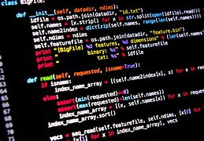
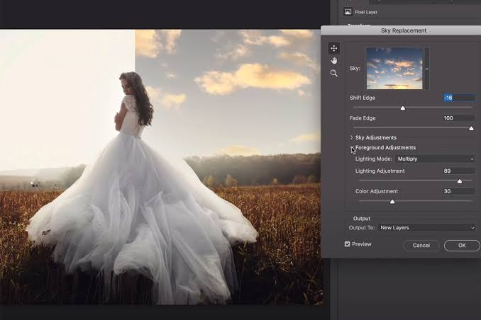

| My Work |
In this page, you will find a selection of my work that showcases my skills and experience. From web design to development, I have worked on a variety of projects that demonstrate my creativity and technical expertise.

python programs
I have made with Python some progects and small apps. They are in basic programming knowlige or in AI. And some of them are silly for fun.

Front-end Websites
Here are the websites that I have done. I used HTML, CSS and Javascript to make these websites. some of them are practice and the others are for clients.

Photo Editing
My creativity with pictures appearsin this section. I am an experienced photographer and photo editor with a passion for creating beautiful images.